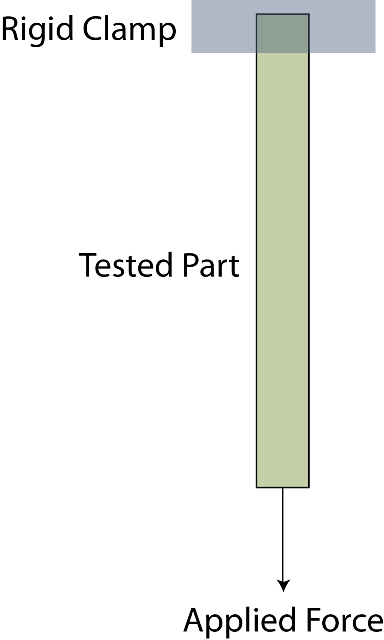
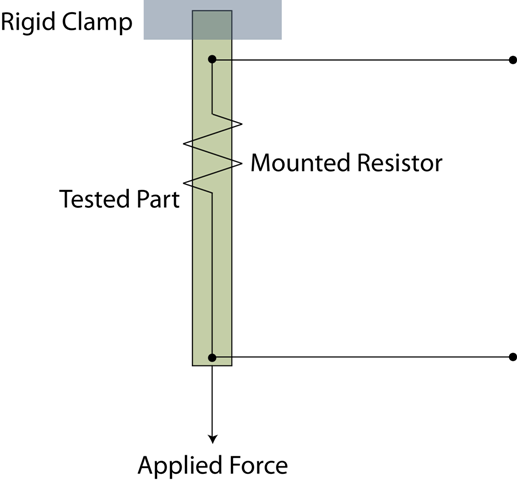
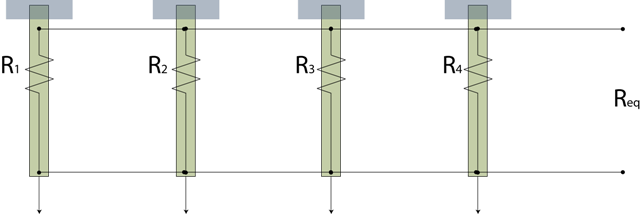

break_detector is a simple command-line Python model of the life and death of a part undergoing Accelerated Life Testing (ALT) and an idea I had a while back on an easy way to detect failures.
Suppose you have a new part and you want to get an idea for how long it can stay in use before it's likely to wear out: it's mean time to failure (MTTF). One way to do this is to subject the part to ALT: put it in a chamber and apply heightened levels of moisture, corrosive agents, heat, cold, etc. to make it age more quickly than in a normal environment. Since each part won't necessarily fail at the same time, you need to subject more than one part to ALT to figure out the part's average lifetime.
The problem is that you need to test a lot of parts to ALT, and you need to know when they fail. That means either having a data acquisition system that can take dozens or even hundreds of inputs simultaneously, or hiring somebody to watch the ALT chambers 24/7 to record when each part fails. Either option is expensive.
I had an idea about how you could run several parts on a single data acquisition input, but I needed a way to see if it might work in real life. So I put together this program to simulate a part that fails and the idea I had to detect the failure; run it a few thousand times and you have a Monte Carlo simulation of the system and a better idea if it would be feasible.
Skip to Basic Usage if you just want to run break_detector; read on if you want to know about the instrumentation.
Imagine your part is clamped on one end and a heavy weight is attached to the other end:
You might do something similar if you were testing a piece of fabric, Kevlar strand, or something similar in ALT: the weight keeps the tension in the part, and at some point the part fails by breaking. Now imagine that you attach a resistor to the part, and that resistor's wire leads are fine copper wires (like magnet wire):
Now when the part breaks, the magnet wires will break as well. Whatever electrical resistance you were reading across the resistor now goes up to "infinity" (not really) as there is no complete electrical circuit anymore.
If you take several of these instrumented parts and put known resistors of different values across them, you can wire up their respective resistors in parallel:
Now when you take an electrical resistance reading, it's the Thévenin equivalent of the network of resistors. If you choose your initial resistors wisely, then you should be able to measure this Thévenin resistance and know which parts have failed and which are still intact. That means that instead of using one input for each part, you can wire up several parts to each input on your data acquisition system and save a lot of money in the process.
What the break_detector program does is simulate both the random failure of a part and the measured resistance readings. You configure break_detector with an initial pick of resistors; after running through a few thousand simulations you can find out if the expected resistance readings are sufficiently different that you will be able to back out which parts failed and when based on only a measured resistance.
break_detector is written in pure Python and has been tested under OS X Lion and Windows 7, and should work on any platform with Python 2.7 (no extra libraries required). It also works under PyPy 1.5 or higher.
python break_detector.py [-nNumSims] [-m] [-oOutputDestination] [-c] [-tCollisionTolerance]
To specify a specific number of simulations to run, use -nNumSims, e.g. -n1000 to run 1,000 simulations.
By default break_detector uses a single process to run the simulations, but if you'd like to use multiple processes use the -m switch. This will instruct break_detector to use as many processes as your computer has CPUs; you likely won't notice any increase in performance (time to finish the simulations) but it will consume less of each CPU's power.
To specify an output destination for the simulation results, use -oOutputDestination, e.g. -oresults.csv to save the results to the file results.csv. Results are stored as ASCII-delimited text files.
To quickly get a good/no-good analysis of your results, use the -c argument to have break_detector run the analysis for you automatically. As of right now it looks for "obvious" resistance reading collisions: if a single electrical resistance reading is found in the results and was produced by more than one combination of failed sensors, this resistor network wouldn't be able to differentiate between the failure states in a real ALT test. Future updates to the analysis will run an additional analysis check to make sure that individual resistance readings are sufficiently far apart (as will be specified by the -tCollisionTolerance flag, defaults to 0.1).
By default break_detector simulates a four-sensor network of 2 MΩ, 3 MΩ, 4 MΩ, and 5 MΩ resistors. If you'd like to try other network configurations, edit the break_detector.py file and edit the build_part_configs function's resistances = [...] statement to as many or as few nominal resistances as you'd like.
To determine if your configuration would work in real life or not, examine the output of the simulation runs. Ideally you should see a fairly large difference between the resistance readings; more than about ten percent or so to be conservative. If this is the case, this means that for any given resistance reading you would take in a real life ALT setup you'd be able to back out which parts had failed and which were still intact.
In a nutshell, you are free to use the download as-is, provided you credit me and understand I offer no warranty or guarantee.
Copyright (c) 2011 Chris R. Coughlin. All rights reserved.
Redistribution and use in the original form of distribution without modification
is permitted provided that the following conditions are met:
THIS SOFTWARE IS PROVIDED BY THE COPYRIGHT HOLDERS AND CONTRIBUTORS 'AS IS' AND ANY EXPRESS OR IMPLIED WARRANTIES, INCLUDING, BUT NOT LIMITED TO, THE IMPLIED WARRANTIES OF MERCHANTABILITY AND FITNESS FOR A PARTICULAR PURPOSE ARE DISCLAIMED. IN NO EVENT SHALL THE COPYRIGHT OWNER OR CONTRIBUTORS BE LIABLE FOR ANY DIRECT, INDIRECT, INCIDENTAL, SPECIAL, EXEMPLARY, OR CONSEQUENTIAL DAMAGES (INCLUDING, BUT NOT LIMITED TO, PROCUREMENT OF SUBSTITUTE GOODS OR SERVICES; LOSS OF USE, DATA, OR PROFITS; OR BUSINESS INTERRUPTION) HOWEVER CAUSED AND ON ANY THEORY OF LIABILITY, WHETHER IN CONTRACT, STRICT LIABILITY, OR TORT (INCLUDING NEGLIGENCE OR OTHERWISE) ARISING IN ANY WAY OUT OF THE USE OF THIS SOFTWARE, EVEN IF ADVISED OF THE POSSIBILITY OF SUCH DAMAGE.